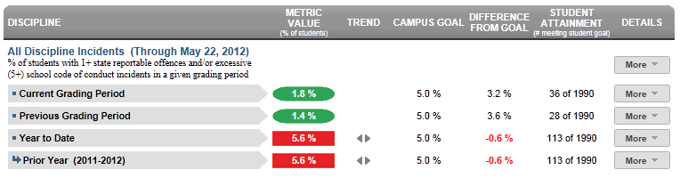
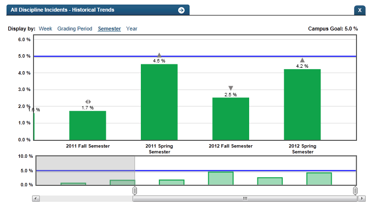

Dashboard Metrics


All Discipline Incidents
Background
Campus Dashboard Metrics
To enable educators to promptly identify and respond to incidences of student misbehavior, many school districts across the country, including Charlotte, Chicago and Dallas, have incorporated measures of student discipline into their internal performance management dashboards. In focus groups conducted with educators, the Discipline Referrals metric, presented in screen shots of the campus dashboard, was considered useful by 97% of those surveyed.
Primary Metric
- All Discipline Incidents: percentage of students with one or more discipline incidents outside of the school code of conduct and excessive (more than 5) school code of conduct incidents within a given grading period, reported for the current grading period, previous grading period and year to date.
Related Metric
- School Code of Conduct Incidents: percentage of students with one or more minor infractions (school code of conduct) incidents within a given grading period, reported for the current grading period, previous grading period and year to date.
User Interface
Dashboard Example
Figure 1 shows the All Discipline Incidents metric as seen on the campus dashboard.

Figure 1 Ed-Fi Campus All Discipline Incidents Metric
Status Definition
This metric displays the percentage of students with more serious and/or repeat discipline incidents over three grading periods: Current Grading Period to date, Previous Grading Period, and school Year to Date. These incidents are defined as follows:
- One or more discipline incidents representing the most serious incidents, excluding School Code of Conduct, Or
- Students with repeat occurrences (five or more) of discipline incidents representing minor infractions
The Status indicator is determined by campus-specific thresholds (campus goals) which are set at the district level. The Ed-Fi dashboards default threshold for each grading period and year to date is 5%.
Table 2 lists the status indicators and trend comparisons as seen on the student dashboard.
Metric Indicator | Comparisons | |||
Metric Name | Sub-metric Name | Metric Status Indicator | Trend | Campus Goal (Delta) |
All Discipline Incidents | Current Grading | Red (Percentage) = if percentage of students with discipline incidents is greater than or equal to campus goal Green (Percentage) = if percentage of students with discipline incidents is less than campus goal | Current and prior grading period Begins after the end of the second grading period | Campus goal and the calculated discipline incident rate |
Previous Grading Period | Red (Percentage) = if percentage of students with discipline incidents is greater than or equal to campus goal Green (Percentage) =if percentage of students with discipline incidents is less than campus goal | Previous grading period Begins after the end of the third grading period | Campus goal and the calculated discipline incident rate | |
Year to Date | Red (Percentage) = if percentage of students with discipline incidents is greater than or equal to campus goal Green (Percentage) = if percentage of students with discipline incidents is less than campus goal | Current year to prior year | Campus goal and the calculated discipline incident rate | |
(a) The Value column displays the number of students with discipline incidents out of the total number of students at the school.
Trend Definition
Trend Indicators: Objective is to indicate All Discipline Incidents | |||
| Up green | If the value for the current time frame is more than 5 percentage points higher than the prior time frame, then display a gray arrow trending upward. | |
Unchanged | If the value for the current time frame is less than or equal to 5 percentage points higher or less than or equal to 5 percentage points lower, then display two gray arrows pointing outward indicating no direction. | ||
| Down red | If the value for the current time frame is more than 5 percentage points lower than the prior time frame, then display a gray arrow trending downward. | |


The trend does not show for the first occurrence of a time frame since data is not available.
Delta Definition
Table 4 defines the Delta indicators for the All Discipline Incidents metric.
Delta Indicators: Objective is to indicate All Discipline Incidents Rate | |||
Metric Name | Sub-Metric Name | Campus Goal | Delta |
All Discipline Incidents | Current Grading Period | Set campus goal | Red (Percentage) = if the calculated delta is equal to or greater than the campus goal Black( Percentage) = if the calculated delta is less than the campus goal |
Previous Grading Period | Set campus goal | Red (Percentage) = if the calculated delta is equal to or greater than the campus goal Black( Percentage) = if the calculated delta is less than the campus goal | |
Year to Date | Set campus goal | Red (Percentage) = if the calculated delta is equal to or greater than the campus goal Black (Percentage) = if the calculated delta is less than the campus goal | |
Periodicity
To enable viewing of this metric as a leading indicator, the data must be updated and loaded frequently, at least weekly, though there is still some benefit from loading monthly.
Recommended Load Characteristics | |
Calendar | Weekly, Monthly |
Frequency of data load | Weekly |
Latency | 2-4 weeks |
Interchange schema | Interchange-StudentDiscipline.xsd |
Tooltips
The standard tool tips for the metric definition, column headers, and help functions display for this metric.
Business Rules
The discipline metrics indicate the level and type of discipline incidents taking place at a campus over various time periods. Districts and states vary in how discipline incidents and actions are categorized. The following rules apply to the Ed-Fi dashboard tools.
The All Discipline Incidents metric displays the percentage of students who meet the following criteria:
- One or more discipline incidents in the time period representing the most serious incidents where the student is identified as a “Perpetrator” (i.e., a student who committed the discipline incident); Or
- Five or more discipline incidents in the time period representing minor infractions where the student is identified as a “Perpetrator.”
Discipline incidents are counted, regardless of whether a discipline action has resulted.
This metric displays the student discipline incident rate for the following grading periods:
- Current Grading Period to date
- Previous Grading Period
- Year to Date
The length of the grading period is configurable and is defined by the district—typically either 6 or 9 weeks.
Data Assumptions
- The campus must record discipline incidents and actions and categorize them by type.
- While state or district regulations may require certain actions for certain types of incidents, the Ed-Fi dashboards do not validate these rules, but rather displays what is recorded.
- Transfer (late enrollment) students may not have a complete history of discipline referrals for the current school year.
Computed Values
The cohort is the set of all current students over all grades at the campus, at the time of the last upload. Students who are not enrolled at the time of the last upload are excluded from the cohort.
The previous grading period is grayed-out if the current period is the first grading period of the school year.
Table 6 defines how values are calculated for each time period. The result of the calculation displays in the Status column on the dashboard.
Metric | Calculation | Excluded students |
All Discipline Incidents | Number of current students with one or more incident types coded as "serious" or 5 or more minor infractions * 100 / all current students in the cohort | Students who are not enrolled at the time of the last upload |
Data Anomalies
Anomalies
- Late enrollees may not have previous discipline incidents from another school.
- Some discipline incidents may spawn two actions, or violate both the school code of conduct and state reportable offenses. These may cause two separate line items in the incident log drill down, or an item for each action taken. This may cause a disparity between the container level metric value (sum of incidents) and the count of line items in the incident log.
- Many JJAEP or discipline alternative campuses stop tracking discipline incidents upon a student's arrival, or use a separate system.
- Currently only display current year discipline incidents in the incident log, although prior year metric values may be available.
- Discipline incidents that are recorded on a non-instructional day will not appear in the historical snapshot, because these days are excluded from the district calendar. These will still appear in the incident log.
Date of Refresh
Best practice is for the date of last data refresh to appear next the metric in the following format:
- (Through April 2010)
Implementation Considerations
Student Identity
Maintaining a correct and consistent student identity is at the center of any education data system. Most systems use some sort of unique identifier. However, sometimes this identifier is entered incorrectly or sometimes different systems use different identifiers.
The UDM XML supports the interchange of multiple types of identifiers. The Student Reference is a complex type within the UDM to maintain the referential integrity of the student (that is, ensuring that the data associated with each student is accurately associated with the right student). The complex type of the student reference assists with implementing the accurate matching algorithm to identify a student by utilizing any of the individual attributes (e.g., Student Unique State ID, Student ID, Campus Local ID (with Campus ID), Name and Birth Date). For example, if the Student Unique State ID is unknown, you can find the student’s identity by their Student ID, First Name, Last Name and Birth Date.
Late Enrollments
For late enrollment students, the full history of discipline referrals may not be available, resulting in an understatement of the metric.
Frequency of Uploading Data
The metric computation implementation may vary depending on the periodicity of loading the data. For example, a daily load requires that you load data for only a single day (i.e., the last instruction day). Less frequent uploads require that you load data for each day since the date of the last load.
Classification of Incidents
The classification of incidents, particularly the most serious incidents, may be driven by state reporting requirements. Ideally a district incorporates both state and local classification of incidents—the UDM is extensible to enable a district to map additional classification types. Additionally, a developer can modify the definition to account for the specific number of incident types that are included in the calculation.
Thresholds
Best practice is to set the campus thresholds for each campus at the district level. A secure mechanism is required to allow the district to set and maintain those thresholds.
Aggregate Metric Inclusions and Exclusions of Special Education Students
Each campus's aggregate metrics may include or exclude the special education population, depending on the intended purpose for a specific metric and campus goal.
Indicator and Metric Definitions
In researching best practices across leading districts, discipline was identified as a leading indicator of course failure and dropping out. With respect to discipline incidents, one way to define this metric is by the number of discipline incidents within a given period. Other related ways districts measure this indicator include:
- Discipline Incidents: breakdown of all discipline incidents by type, i.e. misconduct, school safety incidents, etc.
- Discipline Incidents: percentage of students with at least one discipline incident.
- Discipline Incidents: total number of discipline incidents.
- School Safety Incidents: number of school safety incidents.
Drill Downs
Drill Down Views
The dashboards include the option to see more detail that is associated with a metric. Table 7 lists drill down views that are recommended for this metric.
| Advanced Analysis | Break down of student test assessment (commended, not commended, met standard, and didn't meet standard) (Future Implementation) | |
Grade Level | Graph of test assessment detail by grade level | |
Historical | Graph of metric values across days, weeks, grading periods, semesters, and years. | |
Student List | List of students who do not meet the threshold for this metric for the specified period. |
Business Rules
The Historical Graph allows the user to see historical data across multiple timeframes. As time passes, there are many bars to be displayed; therefore, the slider on the bottom allows the user to adjust the number of bars displayed as well as the time period shown. The timeframes for this metric were chosen based on educator feedback.
User Interface
Dashboard Example
Figure 2 shows the Historical graph of All Discipline Incidents as seen on the campus dashboards.

Figure 2 Ed-Fi Historical All Discipline Incidents